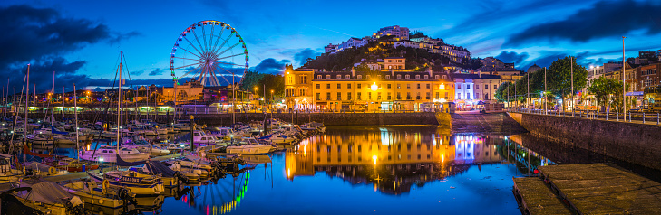
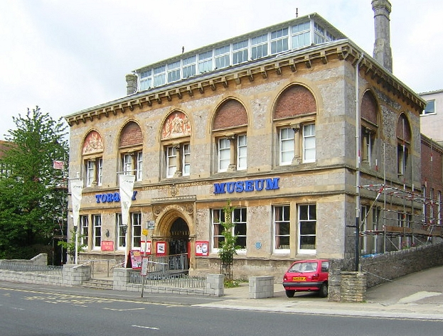
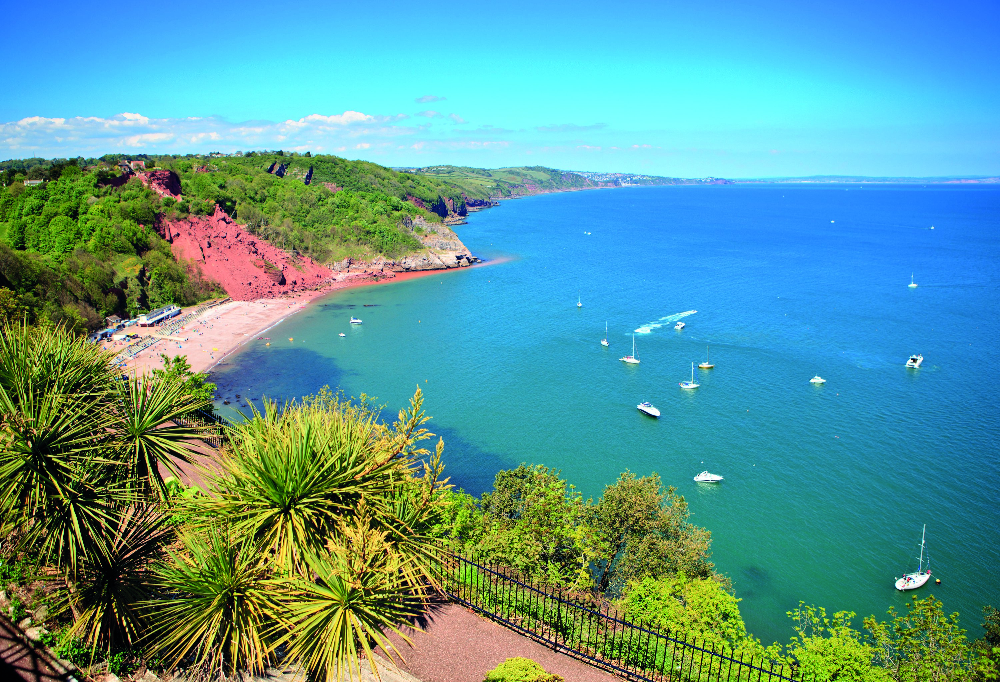

Our Town
Torquay Before and After
The three seaside towns of Torquay, Paignton and Brixham are the resorts known collectively as Torbay, or The English Riviera, and they nestle in a sheltered, east facing bay (Tor Bay) in south Devon, in the south west of England.
Torquay had small beginnings. In 1800, the population of this fishing village numbered less than 1,000. During the Napoleonic Wars however, Torquay, protected from the worst of the weather by the surrounding hills was the favoured port for shelter during the Channel gales and it served as a victualling and supply centre.
Later in the last century, the wealthy sick started making their way to Torquay. They came to the area because the air was at least warm. By the 1840's the population had reached 10,000. Once the railway came to Torquay in 1848, the population increased even more.
Torquay is a cheerful place, epitomised by the colourful lights which go right around the bay. They're on all year round and it lends a bit of cheer, especially when you see them in January. The town area is quite spread out and occupies a rock promontory which divides Babbacombe Bay from Tor Bay.
Torquay Attractions
With its stunning seafront, stylish marina and beautiful beaches meandering the length of this beautiful South Devon town, Torquay is noted for its huge range of year-round activities. Part of the glorious UNESCO accredited English Riviera Global Geopark, it’s a perfect haven for families with tiny tots or teenagers, singles with a taste for adventure, couples looking for romance or experienced travellers looking for something new.
Torquay Museum
Just up the road from the harbour as you go towards Babbacombe, the Museum has six galleries including an Archaeological Gallery with exhibits including a fragment of the oldest human remains found in Britain. There's also an Agatha Christie exhibition with displays of photographs, newspaper cuttings, books and other memorabilia tracing her life and work.
For more information about prices, open times and updates, please visit the official website:
Babbacombe
Babbacombe, high on the wooded cliffs facing north east is a couple of miles from the centre of Torquay and offers some spectacular views of the red sandstone cliffs and the coastline below. From here you can get to several small sandy coves by going down steep cliffside roads, or in the case of Oddicombe Beach, by the cliff railway. Babbacombe, together with the neighbouring village of St Marychurch is a very pleasant part of Torquay with plenty of attractions on the doorstep.
More information in our Local Attractions page:
Cockington Village
At the other end is the quaint village of Cockington, a mile back from the seashore (you can go there by horse and trap if you like). This is surprisingly unspoilt with thatched roofed cottages in a woodland setting. Time seems to have passed by on the main road between the two busiest resorts on the Devon coast and left Cockington alone. See England as it used to be.